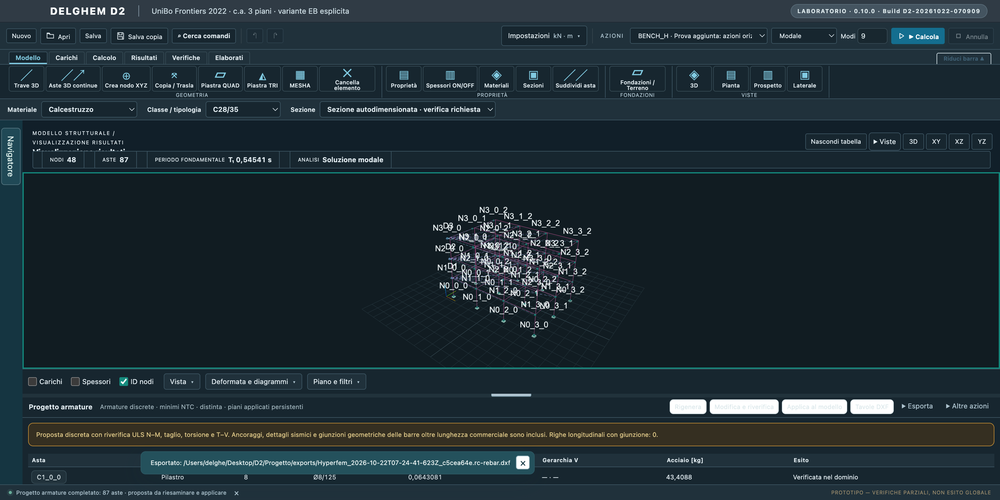
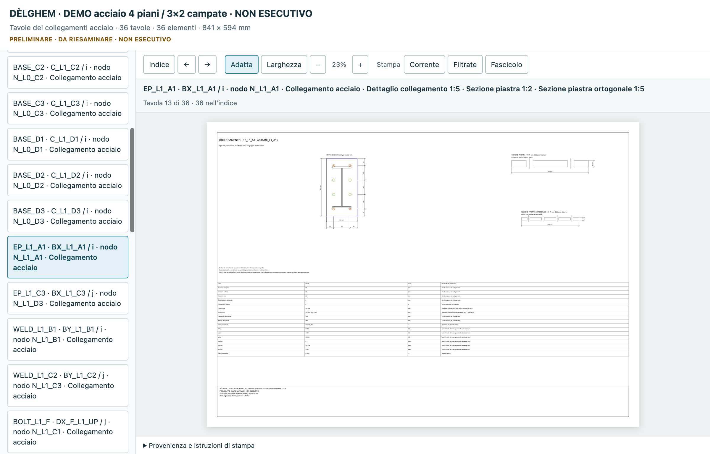

Modellazione e proprietà
Nodi, aste, sezioni, materiali e viste di lavoro per costruire il modello strutturale.
DOSSIER TECNICO / DÈLGHEM
DÈLGHEM è un’applicazione di calcolo strutturale in sviluppo nativa per macOS. Un ambiente unico per costruire un modello FEM, interpretare i risultati disponibili e sviluppare la documentazione tecnica.
Versione di sviluppo · vAlpha1 prevista per gennaio 2027DÈLGHEM / FEM
Le seguenti funzioni illustrano i percorsi disponibili nella versione di sviluppo. Il perimetro verificato viene definito progressivamente.
Nodi, aste, sezioni, materiali e viste di lavoro per costruire il modello strutturale.
Discretizzazione di piastre, impalcati e superfici nei flussi supportati.
Analisi statiche e modali e consultazione dei risultati nei casi implementati.
Elementi metallici, verifiche e documentazione dei collegamenti.
Strumenti di progettazione e documentazione per elementi in c.a., plinti e pali.
Operazioni guidate da comandi testuali, tavole, esportazioni e compositore delle relazioni.
ARM64 / macOS
Una build ARM64 macOS può eseguire direttamente il codice macchina compatibile con Apple Silicon. A differenza di una applicazione Windows avviata in una macchina virtuale, non richiede di avviare Windows Arm su Parallels. Non segue tuttavia che ogni calcolo sia automaticamente più veloce: servono benchmark sullo stesso hardware e modelli confrontabili.
APPLICATION / UI
Schermate dalla versione di sviluppo, non immagini generate.



No. È annunciato un rilascio vAlpha1 previsto per gennaio 2027. Il programma rimane in sviluppo e la disponibilità sarà comunicata separatamente.
L’obiettivo di DÈLGHEM è l’esecuzione nativa su Apple Silicon, quindi non è necessario usare Parallels per avviare il programma.
Sì. La presentazione indica l’indirizzo di contatto e le possibilità di contribuire volontariamente allo sviluppo.